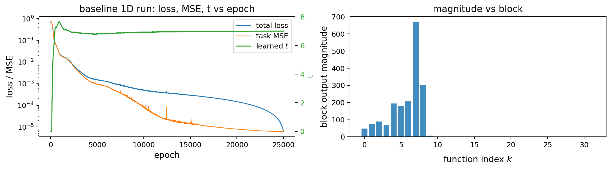
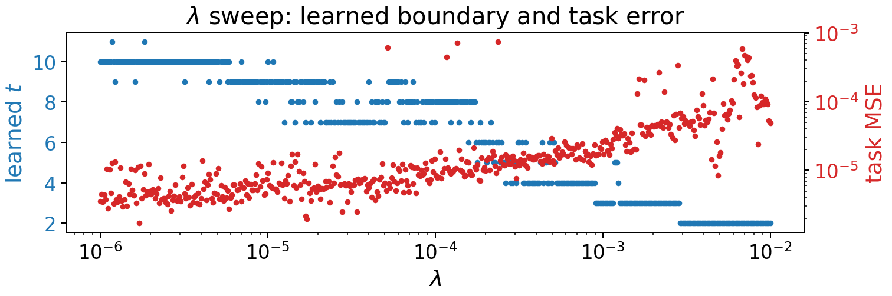
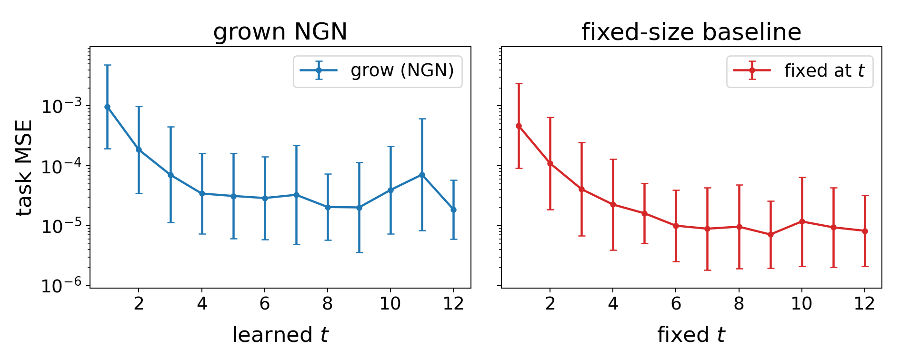
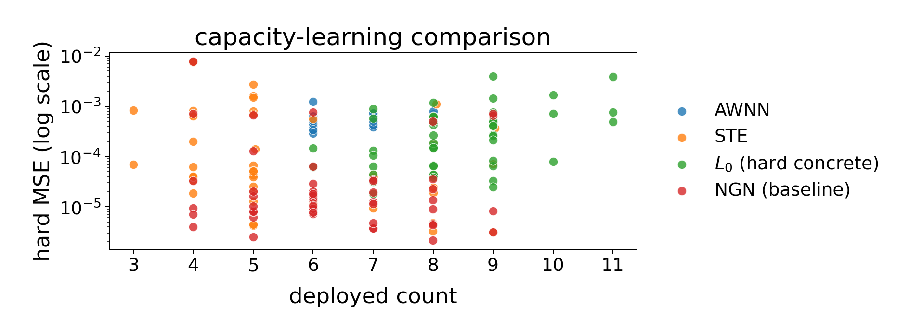

1A parameterization that represents size as a differentiable count over ordered components, learned jointly with the weights.
2Controlled analyses of when the learned count is stable and deployable, and how it compares with fixed sizes and other capacity learners.
3The same mechanism across model families, tasks, and structural axes, including different allocations per layer.
Needs nested capacity: each added fK must strictly enlarge what the prefix can fit.

Fig. 1: baseline run. t grows fast, overshoots, then settles; blocks past the boundary stay near zero.

Fig. 2: λ from 10−6 to 10−2, 500 models. Higher price gives a smaller count, in integer plateaus.
| setting | soft MSE | trunc. |
|---|---|---|
| baseline | 1.31e-05 | 1.31e-05 |
| α = 0 | 5.43e-05 | 4.83e-04 |
| β = 4 const | 1.50e-05 | 6.01e-04 |
Medians over 10 seeds. Removing snapping or sharpening opens a soft-to-truncated gap.

Over 50 seeds, both trace nearly the same error–count curve, and fixed models are typically slightly better at a matched count. The benefit is automatic size selection, not a better model at that size.

Fig. 4: 50 seeds, one point per seed.
| task | what fk is | learned t | soft | trunc. | fixed | prunes back? |
|---|---|---|---|---|---|---|
| MNIST | tanh MLP features | [8.00] | 96.93 | 96.93 | 96.81 | yes |
| MNIST | conv branches | [4.00] | 99.18 | 99.18 | 99.13 | partial |
| CIFAR-10 | conv branches | [7.02] | 71.77 | 71.77 | 72.03 | partial |
| Cora | 2-hop GCN branches | [1.00] | 79.05 | 79.05 | 79.45 | partial |
| TinyStories | attention heads (2 layers) | [2.11, 3.03] | 1.3055 | 1.3234 | 1.3011 | no |
| TinyStories | Mamba state dim. N (2 layers) | [1.00, 2.00] | 1.3551 | 1.3597 | 1.3445 | partial |
Accuracy % (higher is better) for the first four rows, medians of 10 seeds; TinyStories bits/char (lower is better), single seed. Truncation usually costs little, and matched fixed retraining performs similarly. Pruning back from high capacity is not reliable, so the claim covers growth and truncation only. FFN and joint head+FFN rows are omitted here.
A recursive chain with one global boundary learns depth 8 (t = 7.02); soft / truncated / fixed MSE 2.49e-05 / 3.56e-05 / 1.54e-05.
Per-layer boundaries over ten residual layers learn a clean depth of six only with both proposed schedules (λ decreasing and r increasing across layers).
| task | base | NGN rank (e/m/l) | NGN soft / trunc. | fixed | SoRA | AdaLoRA |
|---|---|---|---|---|---|---|
| WikiSQL-easy | 3.5 | 19 (2/9/8) | 78.2 / 78.6 | 77.7 | 75.2 | 45.1 |
| WikiSQL-hard | 2.0 | 21 (4/11/6) | 70.8 / 70.4 | 68.7 | 67.4 | 45.4 |
| Spider | 1.1 | 17 (5/7/5) | 12.6 / 12.4 | 12.3 | 13.9 | 10.3 |
| GSM8K | 45.2 | 18 (7/8/3) | 53.6 / 55.2 | 50.8 | 35.6 | 56.8 |
| SQuAD | 65.2 | 13 (2/7/4) | 67.2 / 67.3 | 67.1 | 67.1 | 66.9 |
Single seed per configuration. e/m/l splits the learned rank across early / middle / late thirds of the layers. SoRA and AdaLoRA target NGN's learned rank; SoRA ends at a lower rank on Spider and GSM8K.
The same mechanism also learns adapter width (nonlinear bottlenecks): for example, width 4 on WikiSQL-easy, soft / truncated 83.2 / 80.5 vs fixed 82.4.